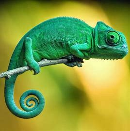

camaleon

NOMBRE Y CIENTIFICO :Camaleón (Chamaeleonidae)
Hábitat: Los camaleones se encuentran principalmente en áreas de África, Madagascar y algunas zonas del sur de Asia. Prefieren hábitats cálidos y secos como bosques, sabanas y matorrales, donde puedan trepar y esconderse entre la vegetación.
Estilo de vida: Son reptiles solitarios y diurnos, conocidos por su capacidad para cambiar de color. Los camaleones pasan la mayor parte de su tiempo en los árboles o arbustos, cazando insectos, que son su principal fuente de alimentación.
Características:
- Cambio de color: Los camaleones son famosos por su habilidad para cambiar de color, lo que utilizan como una forma de camuflaje, para regular su temperatura o para comunicarse con otros camaleones.
- Lengua larga: Tienen una lengua extremadamente larga y pegajosa, que pueden extender a gran velocidad para atrapar insectos a distancia.
- Visión independiente: Tienen ojos que pueden mover de manera independiente, lo que les permite observar su entorno de 360 grados sin mover la cabeza.
- Cola prensil: Su cola es muy flexible y prensil, lo que les ayuda a sujetarse a las ramas y moverse entre los árboles de manera eficiente.
- Baja tasa metabólica: Son reptiles de metabolismo lento, lo que les permite sobrevivir con una dieta ligera basada en insectos, y no requieren mucha comida en comparación con otros animales.
Este reptil es fascinante por su adaptación a los entornos naturales y sus habilidades únicas.
regresar al menu